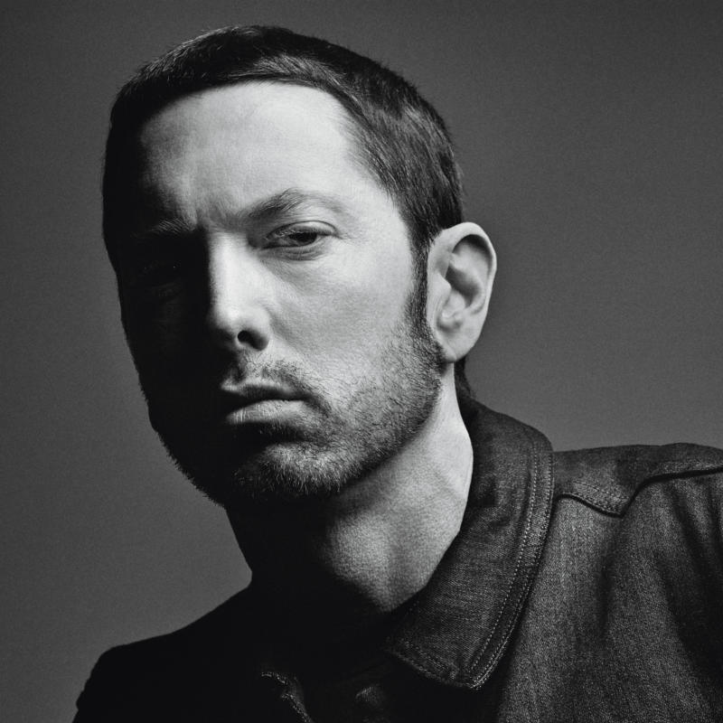

Eminem
Eminem, настоящее имя Маршалл Брюс Мэтерс III, англ. Marshall Bruce Mathers III) – американский рэпер, музыкальный продюсер и композитор. Один из самых продаваемых музыкальных артистов в мире, обладатель пятнадцати премий Грэмми и премии «Оскар» за лучшую песню к кинофильму «8 миля», где он сыграл главную роль.
Родился Эминем 17 октября 1972 года в Сент-Джозефе штата Миссури. Отец оставил семью, когда Маршаллу не было и года. С тех пор мальчик вместе с мамой много переезжал, жил у родственников. Затем семья обосновалась в Детройте, но и там Маршаллу было нелегко – он часто менял школы, попадал в драки. Увлекшись рэпом, Маршалл уже в 13 лет придумывал песни, а в 15 основал свою группу.
После окончания школы Eminem испробовал несколько мало оплачиваемых работ, выступал на радио. А в 1995 году присоединился к группе «Soul Intent». В следующем же году в биографии Маршалла Мэтерса был выпущен первый альбом «Infinite», который не стал особо успешным. Но рэпер продолжил работу.